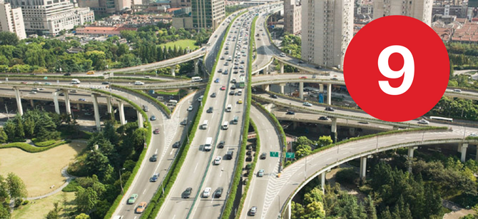
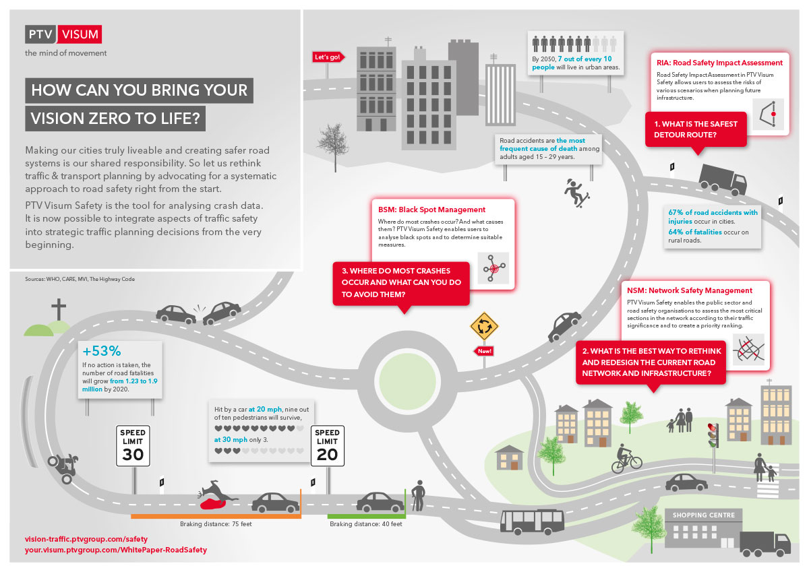

    <div id="vsebina">
    <div class="panel col-xs-12 col-sm-9 ">      
                
           
               <div class="paragraph collapse in col-xs-12 col-sm-8" id="vissim"> 
                <h1 class="glavniNaslov">PTV Vissim</h1> 
                  
                <p class="bodytext">Bez obzira radi li se o usporedbi  geometrije raskrižja, analizi prioriteta javnog prijevoza, ili razmatranju učinaka specifične signalizacije, PTV Vissim omogućuje Vam preciznu simulaciju prometnih obrazaca.  Motorizirana osobna vozila, transport dobara, željeznički i cestovni promet, pješaci i biciklisti –  kao svjetski vodeći software za mikroskopsku simulaciju prometa, PTV Vissim pokazuje sve korisnike ceste i njihove interakcije u jednom modelu. Znanstveno podržani modeli kretanja pružaju realistično modeliranje svih korisnika ceste.  
                <br><br>
                Software nudi fleksibilnost u nekoliko pogleda: koncept veza i priključaka omogućuje korisnicima geometrijsko modeliranje na različitim razinama kompleksnosti. Karakteristike vozača i vozila omogućuju postavljanje individualiziranih parametara. Nadalje, velik broj sučelja pruža besprijekornu integraciju s drugim sustavima za kontrolu signala, upravljanje prometom, ili modelima emisije. 
                <br><br>
                PTV Vissim zaokružuju sveobuhvatne mogućnosti analize koje su moćan alat za procjenu i planiranje urbane i izvangradske prometne infrastrukture. Primjerice, softverska simulacija može se iskoristiti za kreiranje detaljnih obračuna ili impresivnih 3D animacija za različite scenarije. Ona je idealan način za prezentaciju uvjerljivih i sveobuhvatnih planiranih mjera infrastrukture javnosti i donositeljima odluka.
                </p> 
                <h3>Grafički prikaz. Simulacija ponašanja vozača</h3>
                <a href="_slike/Infografik_Fahrzeugfolgemodell_EN.jpg" target="_blank"></a>
               
                </div>           
<!--............................................... -->
              <div class="paragraph collapse col-xs-12 col-sm-8" id="prednosti" > 
              <h1 class="podNaslov">PTV Visim prednosti</h1> 
              
              <h3>Multimodalnost</h3>   
               <p class="bodytext">PTV Vissim za mikroskopsku prometnu simulaciju koristi više od 12 000 korisnika, u područjima javne vlasti, savjetovanja, znanosti. Pridružite se zajednici i modelirajte sve vrste prometa i njihove interakcije integrirane u jedinstveni alat. Primijenjeni modeli kretanja motoriziranih vozila, biciklista i pješaka čine valjanu procjenu i realističnu reprezentaciju svih mogućih prometnih aspekata. </p> 
               
              <h3>Maksimalna preciznost u detaljima</h3><p>
               Postignite maksimalnu preciznost u detaljima uz PTV Vissim. Uz naš koncept veza i priključaka, možete detaljno mapirati svoju mrežu i pritom modelirati različite geometrije – od standardnog čvora, sve do kompleksnih raskrižja. Uključivanje znanstvenih bihevioralnih modela, poput „Car Following“ modela profesora R. Wiedemanna, ili „Social Force“ modela za pješake, osigurava se realistično ponašanje svih korisnika ceste unutar postojeće i planirane prometne infrastrukture.  
              </p>
              
               <h3>Virtualno testiranje autonomnih vozila</h3><p>
               Primijenite PTV Vissim, vodeći svjetski software za multimodalnu mikroskopsku simulaciju, za procjenu bilo koje razine ponašanja motoriziranih vozila kao ekonomičnu i učinkovitu alternativu terenskom ispitivanju. Sposobnost modeliranja svih vrsta prometa i njihovih interakcija ujedinjena u jednom alatu, pored testiranja dinamike motoriziranih vozila, korisnicima omogućuje i provođenje valjane procjene svih prometnih aspekata.  
              </p>
              
                <h3>Lakoća upotrebe i produktivnost</h3><p>
                Izgradite svoj model u PTV Vissimu efektno: iskoristite prednost raznovrsnih sučelja (COM, DriverModel, DrivingSimulator, SignalControl, Emission, ANM) za uvođenje već postojećih mreža iz PTV Visuma ili drugih strateških prometnih modela, za povezivanje vanjskih kontrolora signala (primjerice, Siemens TL, Lisa+, VS – Plus, SCOOT, SCATS, RBC i drugi), ili za prijenos podataka o emisiji u svrhu provođenja detaljne analize uz pomoć sredstava simulacije. 
                Grafičko korisničko sučelje s fleksibilnim prozorima, 2D i 3D mrežnim prozorima, uređivačima s mnogim postavkama za učinkovito kreiranje i uređivanje mrežnih objekata i njihovih atributa, kao i brojne opcije za prikaz završnih rezultata, osiguravaju idealnu lakoću i jednostavnost korištenja. 
               </p>
               
                <h3>Fleksibilnost i kapacitet integracije </h3><p>
                Odlučite se za alat za planiranje koji se može prilagoditi Vašim potrebama. Generičko COM sučelje omogućuje vam interakciju s vanjskim aplikacijama. Različite razine postavki za svojstva vozača i vozila, prometne zahtjeve i raspored javnog prijevoza pomoći će Vam u fleksibilnom proširivanju Vašeg alata mikroskopskog planiranja u stabilni okolinski test. U sklopu PTV Vission Traffic Suita, besprijekorno možete povezati simulacijski software s drugim PTV software rješenjima. 
                </p>
                  
                <h3>Znanstveni pristup</h3><p>
                Oslonite se na softverski paket koji se temelji na desetljećima intenzivnog istraživanja, bliskoj komunikaciji s korisnicima i neprekidnom razvoju. Imat ćete pristup stabilnom simulacijskom alatu koji uvijek ujedinjuje najnovije spoznaje iz istraživanja i postavlja nove standarde.
                </p>
                   
                <h3>2D i 3D vizualizacija</h3><p>
               Promijenite perspektivu klikom na miš u PTV Vissimu i prikažite rezultate Vaše analize na impresivan način: doprinesite procesima javnog donošenja odluka detaljnim izvješćima, 2D animacijama i zapanjujućim 3D vizualizacijama. Stvorite kompleksne prometne situacije, privlačne i razumljive za svih. 
                </p>
                   
                <h3>Snažna korisnička podrška</h3><p>
               Postanite dio velike međunarodne zajednice korisnika i iskoristite prednost kompetentnog tima za podršku, profesionalne službe za korisnike, sveobuhvatne dokumentacije i posvećenih programa treninga, kao i grupnih sastanaka i radionica korisnika za postizanje intenzivne razmjene znanja i konstantnog dijaloga.     
                </p>

              
              </div> 

<!--............................................... -->
              <div class="paragraph collapse col-xs-12 col-sm-8" id="demoVerzija">
              <h1 class="podNaslov">Demo verzija</h1>            
               <p class="bodytext">Isprobajte demo verziju i upoznajte PTV software!</p> 
               <div id="demoVerzija">
                <a id="mail" href="form.html">DEMO VERZIJA</a>
              </div>                
              </div>   
             
 <!--............................................... -->                  
          <div class="col-xs-11 col-sm-4">
            <aside>             
              <div id="pdfji">
                <b>Dodatne inforamcije:</b>
                <div class="pdf"><a href="_ostalo/EN-US_PTV_Vissim_Brochure.pdf" target="_blank"><i class="fa fa-file-pdf-o" aria-hidden="true"></i>  PTV Visim Brochure</a></div>
                 <div class="pdf"><a href="_ostalo/EN_PTV_Vissim_Modules.pdf" target="_blank"><i class="fa fa-file-pdf-o" aria-hidden="true"></i>  PTV Vissim modules</a></div>
                 <div class="pdf"><a href="_ostalo/SUC_2014-01-07_The-Copenhagen-Project_EN.pdf" target="_blank"><i class="fa fa-file-pdf-o" aria-hidden="true"></i>  PTV Vissim success Copenhagen</a></div>
                 <div class="pdf"><a href="_ostalo/SUC_2014-01-16_Eelup-Roundabout_Australia_EN.pdf" target="_blank"><i class="fa fa-file-pdf-o" aria-hidden="true"></i>  PTV Vissim success Australia</a></div>                              
              </div>

              <div>
                <a id="mail" href="mailto:info@appia.si" target="_top">Kontaktirajte  nas!</a>
              </div>
              <div id="demoVerzija">
                <a id="mail" href="form.html">Demo verzija</a>
              </div>
              <br>
              <div class="infoBox" id="distributer">                   
               <b id="kontaktDistributerjaNaslov">Kontakt distibuterja</b><br>
               <a href="http://www.appia.si/" target="_blank">Appia d.o.o </a> <br>
               telefon:+386 1 524 05 20<br>
               E: <a href="mailto:info@appia.si" target="_top">info@appia.si</a><br>
              </div>
            </aside>
          </div> 
    </div> <!--/PANEL  -->   
    </div><!--/VSEBINA  -->  